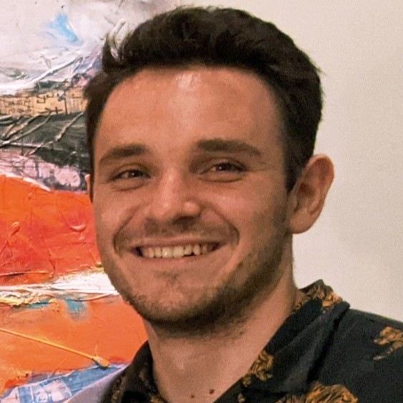
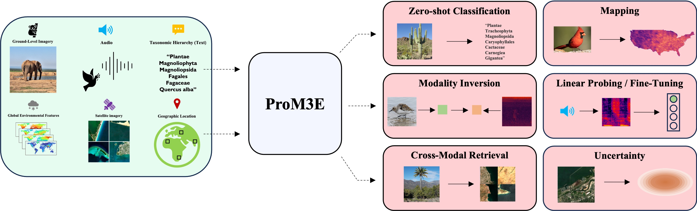

|
Dan Cher I'm a PhD student at Washington University in Computational Data Sciences, where I have the honor of being an AI-ACCESS and Olin Chancellor's fellow. I'm working in the Multimodal Vision Research Laboratory led by Dr. Nathan Jacobs. Prior to the PhD, I worked as a Data Scientist (6 YoE) tackling geospatial problems focusing on using machine learning to quantify the risk of where people live and drive. Also built some aerial imagery models. During that time I received my MS in Data Science from Worcester Polytechnic Institute. |
 |
{kind=link}
ResearchI am interested in computer vision, multi-modal modeling and it's applications to geospatial problems. My work has focused on leveraging structured geospatial data for satellite image synthesis and multimodal representation learning for geospatial applications. |

|
VectorSynth: Fine-Grained Satellite Image Synthesis with Structured Semantics
Dan Cher*, Brian Wei*, Srikumar Sastry, Nathan Jacobs WACV, 2026 project page / github / arXiv We introduce VectorSynth, a diffusion-based model that generates pixel-accurate satellite imagery from polygonal geographic annotations with semantic attributes, enabling spatially grounded, geometry- and language-guided image synthesis and editing with superior semantic and structural fidelity. |
|
 |
ProM3E: Probabilistic Masked MultiModal Embedding Model for Ecology
Srikumar Sastry, Subash Khanal, Aayush Dhakal, Jiayu Lin, Dan Cher, Phoenix Jarosz, Nathan Jacobs Preprint, 2025 arXiv We introduce ProM3E, a probabilistic masked multimodal embedding model that enables any-to-any modality generation, fusion feasibility analysis, and superior cross-modal retrieval and representation learning through masked modality reconstruction in the embedding space. |